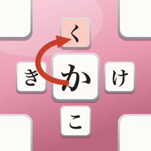

向きのくせが分かるフリック練習
打ちまちがえた字が、どの向きにずれて化けたかを数えて見せる、フリック入力の練習です。
お題の言葉を、アプリの中の 12 キーのフリックのキーボード（iPhone のかなのキーボードと同じ並び・同じ向き）で打ちます。iPhone のキーボードでは、アプリに届くのは字だけで、どの向きにはらったかは分かりません。このアプリは自分のキーボードを持っているので、はらった向き・角度・長さをそのまま数えられます。
- ずれの向きで分けて数えます。「き → く 左のつもりが上に」「き → か はらいが短くて押しただけに」「か → さ 右のキーへずれた」「が → か 濁点をつけわすれた」のように、その場で出します
- くせの図。12 のキーそれぞれに 5 つの向きの字を並べ、まちがいが多いほど朱を濃くし、いちばん多い化け方を朱の矢印で見せます
- 角度のくせ。キーを選ぶと、はらった着地点の点と、向きごとの角度のずれ（「左はらいは平均 19° 上ぎみ」など）・はらいの長さを出します
- 苦手の練習。まちがいの多いキーと向きの字をたくさんふくむ言葉を選んで出します。「このキーを練習」もできます
- 60秒・20語の練習、お題は言葉・短い文・ことわざで 300 ほど。1分の字数と正しさの記録とグラフ
- はらいの長さ（短い・ふつう・長い）・押している間の案内・振動・ひらがなだけのお題を設定で選べます
- 登録・課金・通知・ランキングはありません。記録はこの端末の中だけに保存します。画面のいちばん下に小さな広告が出ます（練習で打っている間はかくします。画面いっぱいの広告・動画の広告は出しません）